SIMULATION Cosmos3
26.9→68.0%
+41.1 percentage points
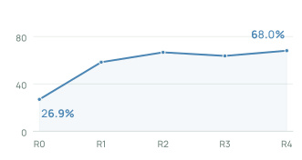
7 unseen RoboTwin 2.0 tasks
Evolving World Action Models
through Video-Action Verification
‡ Equal contribution† Project lead* Corresponding author
01 / RESULTS
Mean task success (%) · R0–R4
+41.1 percentage points

7 unseen RoboTwin 2.0 tasks
+17.9 percentage points
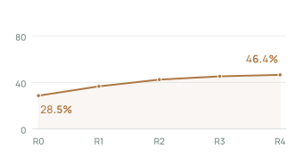
7 unseen RoboTwin 2.0 tasks
+56.7 percentage points
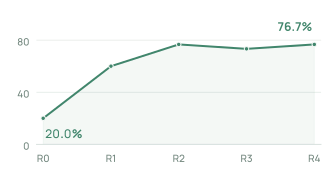
3 unseen long-horizon composite tasks
02 / THE STORY
EVO-WAM learns from its own generated video–action trajectories, retaining prefixes that pass task-completion and action-consistency checks.
Self-training uses no additional expert demonstrations or external execution of candidate actions.
Method03 / IN ACTION
Separate trials, similar layouts. Inference pauses removed.
04 / THE METHOD
Duck placement
Visual check
Visual scan → IDM → endpoint vote
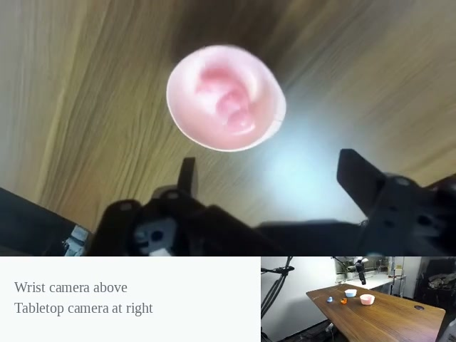
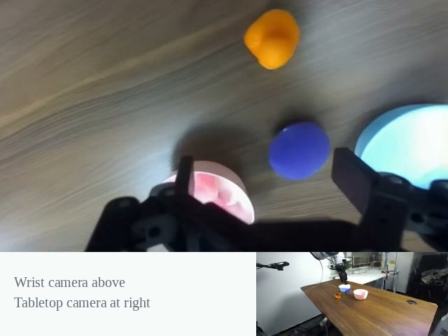
Frame reviewBlue duck lands between the bowls.
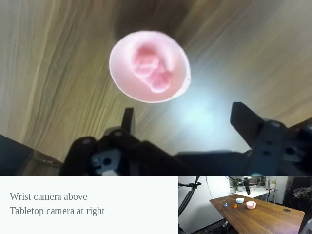
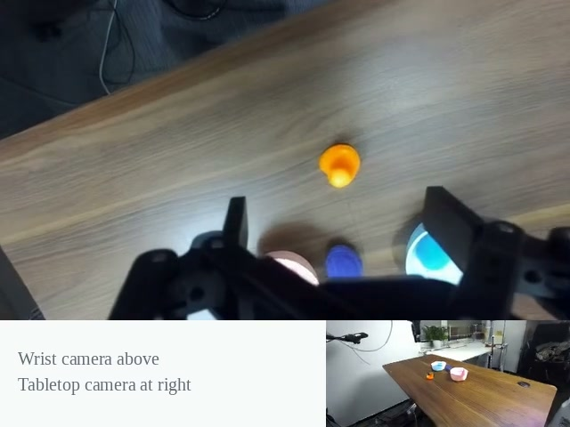
Frame reviewObject inconsistency: a second duck appears while the original remains.
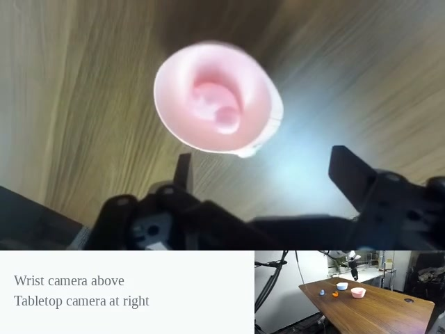
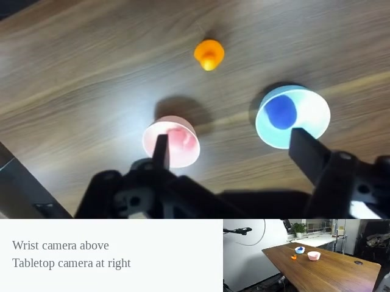
IDM failed; endpoint votes skipped.
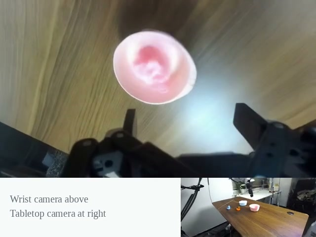
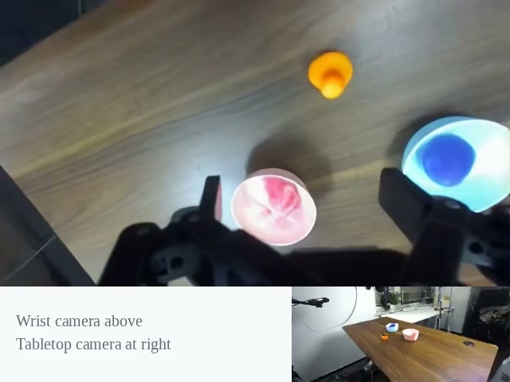
Retained for training.
Checks: goal completion · release · object consistency · robot consistency. Endpoint vote: ≥2/3 Accept.
Action consistency
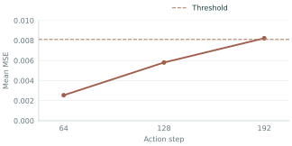
Mean MSE / threshold0.008226 > 0.008111
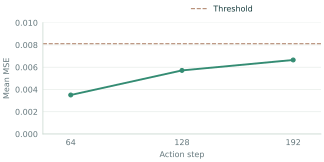
Mean MSE / threshold0.006650 < 0.008111
Accumulate verified prefixes across tasks and rounds, mix them with the original data, and fine-tune the WAM for the next round.
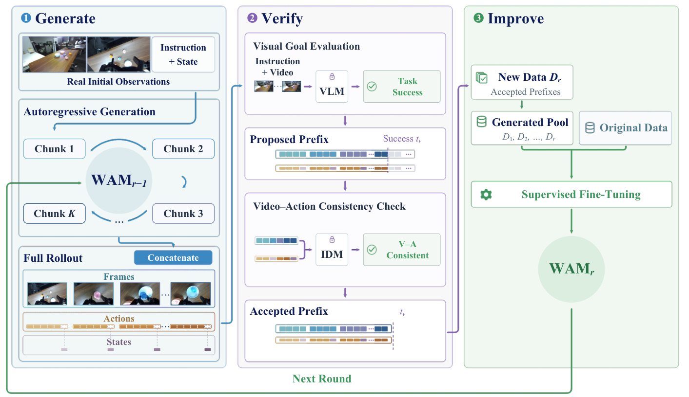
Paper, Figure 2.
05 / RESOURCES